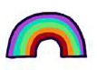
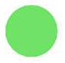
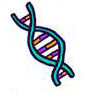
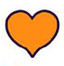

One’s internal sense of being male, female, neither of these, both, or another gender(s). Everyone has a gender identity, including you. For transgender people, their sex assigned at birth and their own internal sense of gender identity are not the same.
 Identité de genre
The physical manifestation of one’s gender identity through clothing, hairstyle, voice, body shape, etc. Most transgender people seek to make their gender expression (how they look) match their gender identity (who they are), rather than their sex assigned at birth.
 Expression de genre
The assignment and classification of people as male, female, intersex, or another sex based on a combination of anatomy, hormones, chromosomes.
 Sexe assigné à la naissance
What gender you are sexually attracted to. These attractions are generally subsumed under heterosexuality, homosexuality, and bisexuality, while asexuality (the lack of sexual attraction to others) is sometimes identified as the fourth category.
 Physiquement attiré par
Romantic orientation, also called affectional orientation, indicates the sex or gender with which a person is most likely to have a romantic relationship or fall in love.